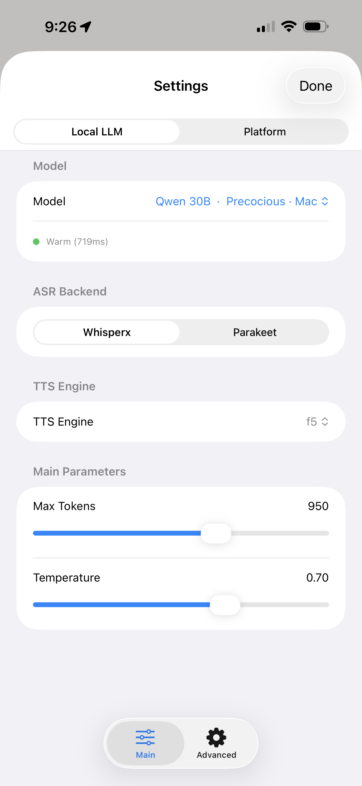

SURFACE 01
Persona Roster
Home screen showing all available personas. Each entry displays avatar, last message preview, and real-time conversation state.

iOS CLIENT
A SwiftUI iOS app that acts as the control surface for a distributed local AI platform running across Mac and PC infrastructure.
Home screen showing all available personas. Each entry displays avatar, last message preview, and real-time conversation state.
FaceTime-style conversation interface with streamed text, streamed audio, and runtime telemetry.

Group calls, reenactments, and synthetic roundtable discussions.



Every persona is assembled from interchangeable visual components. Mix and match assets to create entirely new characters.

Observability, animation tuning, model parameters, and platform control.